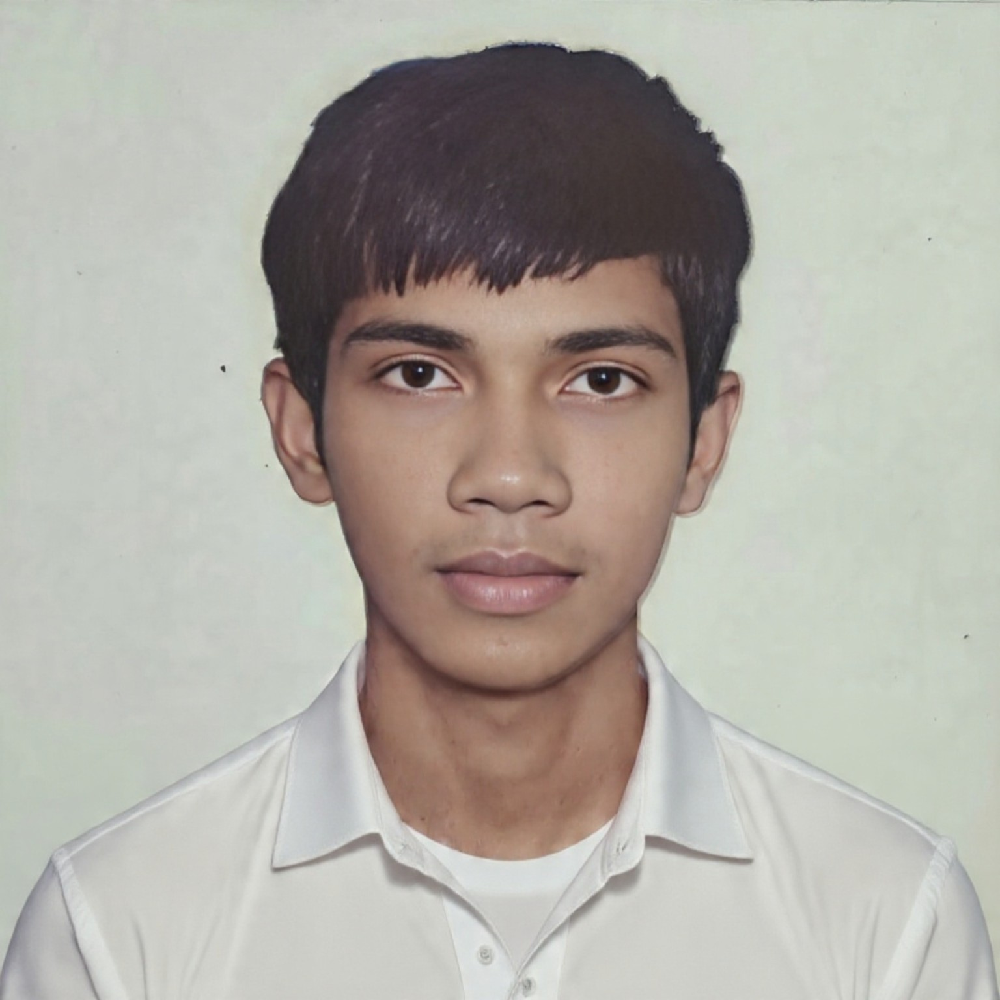

🔬 Science & Technology
Curious about how things work and exploring new fields.
Hi, I'm Tanvir, also known as Shoron. I'm a student from Bangladesh with a growing interest in Computer Science, Aerospace, science and technology.

I completed my HSC examination in 2026 from Lions School and College, Saidpur. I'm currently exploring my next academic path and continuing to build my skills. This page is my central online profile and connects my public profiles in one place.
HSC 2026
Lions School and College, Saidpur
Curious about how things work and exploring new fields.
Building skills step by step.
Fascinated by flight, rockets and space.
These are my public profiles.